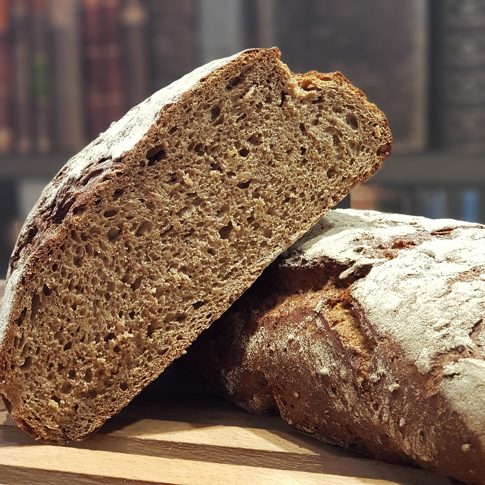

Rye bread

Rye bread
Ingidients
- 700 g white Flour
- 300 g rye Flour
- 600 ml Water
- 35 g Salt
- 42 g fresh Yeast
- 10 g Sugar
Procedure
- Mix the ingridients together well.
- Knead the dough for about 15-20 minutes
- Let it rise for 1 hour.
- Make two loafs out of risen dough. Put them in the baking plate and let them rise for another 20 minutes
- Put the plate in preheated oven (200C) and levae it in for about 50 minutes.